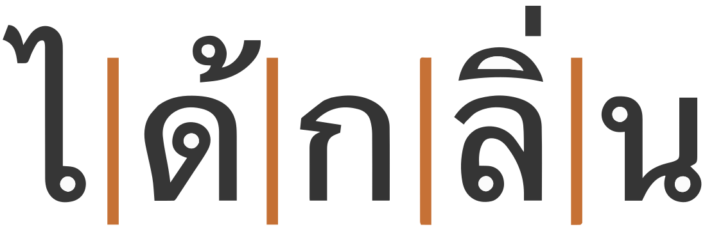
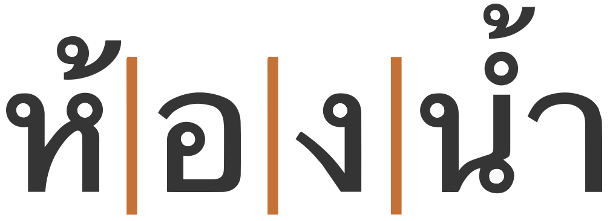
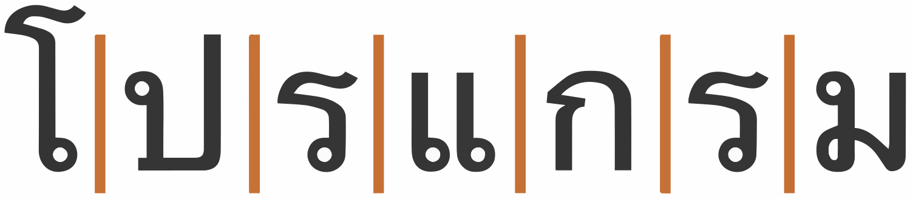
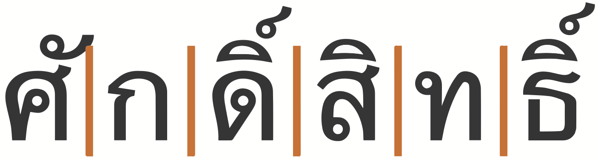
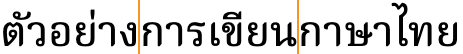
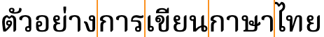
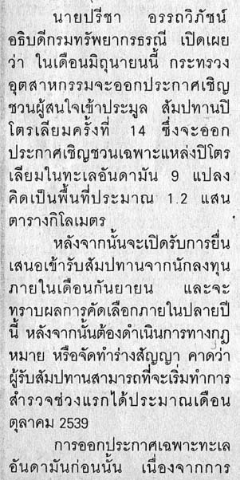
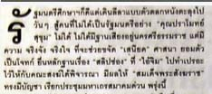
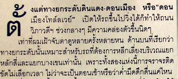

This document describes requirements for the layout and presentation of text in the Thai language, using the Thai script when they are used by Web standards and technologies, such as HTML, CSS, Mobile Web, Digital Publications, and Unicode.
This document describes the basic requirements for the Thai language, using the Thai script layout and text support on the Web and in eBooks. These requirements provide information for Web technologies such as CSS, HTML and digital publications about how to support Thai language speakers. Currently the document focuses on Thai as used for the Thai language. The information here is developed in conjunction with a document that summarises gaps in support on the Web for Thai.
The editor's draft of this document is being developed by the Southeast Asian Layout Task Force, part of the W3C Internationalization Interest Group. It is published by the Internationalization Working Group. The end target for this document is a Working Group Note.
Sending comments on this document
If you wish to make comments regarding this document, please raise them as github issues. Only send comments by email if you are unable to raise issues on github (see links below). All comments are welcome.
To make it easier to track comments, please raise separate issues or emails for each comment, and point to the section you are commenting on using a URL.
This document outlines some features related to the layout of Thai text used for the Thai language that may be useful background information for those reading the gap-analysis documents and issues for Thai content authors. It doesn't address the needs of other languages that are written in the Thai script.
This document is an initial draft and needs thorough review by Thai experts.
This document is pointed to by a separate document, Thai Gap Analysis, which describes gaps in support for Thai on the Web, and prioritises and describes the impact of those gaps on the user.
Wherever an unsupported feature is indentified through the gap analysis process, the requirements for that feature need to be documented. This document is where those requirements are described.
This document should contain no reference to a particular technology. For example, it should not say "CSS does/doesn't do such and such", and it should not describe how a technology, such as CSS, should implement the requirements. It is technology agnostic, so that it will be evergreen, and it simply describes how the script works. The gap analysis document is the appropriate place for all kinds of technology-specific information.
Definitions for various terms used in this document can be found in this glossary.
The document International text layout and typography index (known informally as the text layout index) points to this document and others, and provides a central location for developers and implementers to find information related to various scripts.
The W3C also maintains a tracking system that has links to github issues in W3C repositories. There are separate links for (a) requests from developers to the user community for information about how scripts/languages work, (b) issues raised against a spec, and (c) browser bugs. For example, you can find out what information developers are currently seeking, and the resulting list can also be filtered by script.
The initial material for this document was an edited copy of part of the Thai orthography description by the same author.
The Thai orthography is an abugida. Consonant letters have an inherent vowel sound. Vowel signs are attached to the consonant to produce a different vowel.
Thai text runs left to right in horizontal lines.
Spaces separate phrases, rather than words.
Each onset consonant is associated with a high, mid, or low class related to tone. Tone is indicated by a combination of the consonant class, the syllable type (checked/unchecked), plus any tone mark.
No conjuncts are used for consonant clusters.
Syllable-initial clusters and syllable-final consonant sounds are all written with ordinary consonant letters. It can therefore be difficult to algorithmically detect syllable boundaries.
An inherent vowel is pronounced o inside a closed syllable, and a in an open syllable. Non-inherent vowels are represented using vowel signs. Characters used to represent vowels and dipthongs include combining marks, vowel letters, and consonants. There are pre-base vowel glyphs. Thai uses visual placement: only the vowel sign components that appear above or below the consonant are combining marks; the others are ordinary, spacing letters that are typed in the order seen.
There are no independent vowels, and standalone vowel sounds are written using vowel signs applied to อ [U+0E2D THAI CHARACTER O ANG].
Thai has a large number of composite vowels (including diphthongs) made from dedicated vowel characters and from consonants. Composite vowels can involve up to 4 glyphs (plus a tone mark), and glyphs can surround the base consonant(s) on up to 3 sides, eg. เกี๊ยะ kía̯ʔ geta (footwear)
Thai has vocalics.
Thai has native digits, and they are commonly used.
Thai is written horizontally, left to right.
The orthography has no case distinction, and no special transforms are needed to convert between characters. Nor is printed text cursive.
Modern type styles often omit the loops found in more traditional typefaces. See an article that explores this in depth.
Loopless is considered to be more contemporary and modern, and is mainly used for advertising and titling. The distinction doesn’t necessarily map to that of serif vs sans – Noto, for example, provides both serif and sans Thai font faces, but they both have loops. On the other hand, Neue Frutiger Thai offers traditional (looped) and modern (loopless) alternatives as part of the same font family (each with both regular, italic and bold substyles).
Thai has no stacking or conjunct behaviour, but the following are a few selected examples of contextual shaping and positioning.
Most of the combining characters in Thai are used for vowel signs and tone marks. Combining characters need to be placed in different positions, according to the visual context. The example below shows the same tone character displayed at different heights, according to what falls beneath it.
Thai regularly combines multiple combining characters above a base consonant. There are two examples in the text below, both of which show a base character with a vowel sign and then a tone mark on top.
Although Thai has very little in the way of shaping, [[[#fig_shaping]]] shows a number of small glyph adaptations that occur in some fonts (here, Noto Serif Thai) when certain tall or deep consonant letters have vowel marks attached. The 2 examples on the left show a slight reduction in the downward extent of the consonant glyph; in the middle 2 examples the part of the consonant glyph that lies below the baseline is removed altogether and replaced by the vowel sign; and in the right-most example, the height of the consonant glyph is reduced when a vowel sign appears above it.
Mitchell describes how italicisation is used for meta text and to convey the ‘about’ voice, rather than for emphasis or names of things (for which bold is used).
Italicisation tends to be applied to whole paragraphs or groups of paragraphs, for such things as picture captions, bylines, and other labels, commentaries, summaries such as standfirsts in magazines or news stories, and signposting. It is also regularly used for direct speech between quote marks.
Non-combining Thai vowel characters are treated as independent grapheme clusters. Only combining characters are grouped together with their base into a cluster.
Base SARA_AM? Combining_mark*
Combining marks may include zero or more of the following types of character, grouped by labels that correspond to Unicode Indic syllabic category values.
The spacing letters used for vowel signs are all individual grapheme clusters, with the exception of ำ [U+0E33 THAI CHARACTER SARA AM] (see Sara AM & nikhahit), which has the general category of Letter, but it is treated like a combining mark during segmentation.
The following examples show a variety of grapheme clusters:
|  | ได้กลิ่น dây.klìn to smell |
|  | ห้องน้ำ hɔ̂ŋ.náːm toilet |
|  | โปรแกรม prōː.krɛ̄m (computer) program |
|  | ศักดิ์สิทธิ์ sàk̚.sìt̚ to be sacred |
The grapheme cluster boundaries are convenient for justification algorithms, which insert equal amounts of space between non-combining letters, including between non-combining vowel sign components and their consonants (see Text alignment & justification).
One exception is the aforementioned ำ [U+0E33 THAI CHARACTER SARA AM], which is split across 2 typographic units for the purpose of justification (see [[[#inter_character_spacing]]]).
The concept of 'word' is difficult to define in any language (see What is a word?). We will treat it as a vaguely-defined but recognisable semantic unit that is typically smaller than a phrase and may comprise one or more syllables.
Spaces are used in Thai as phrase separators, but Thai doesn't separate words in a phrase using visible spaces.
There is, however, a concept of words in the text. For example, lines are supposed to be broken at word boundaries.
The main difficulty arises when dealing with compound words. It can often be difficult to decide whether a given string of syllables represents multiple words or a single compound word.


The variation may be related to the operation being performed on the text (eg. line breaking in narrow newsprint columns, vs. double-click selection, vs. cursor movement, etc.), or it may just be down to personal preference,
The difference may also be contextually dependent. Wirote Aroonmanakun describes how คนขับรถ kʰon kʰàp ròt driver should be viewed as a single word in the context คนขับรถนั่งคอยอยู่ในรถ kʰon kʰàp ròt nâŋ kʰɔːj jûː nràjt the (man who works as a) driver is waiting in the car, whereas in the phrase คนขับรถผ่านแยกนี้ไม่มากนัก kʰon kʰàp ròt pʰàːn jɛ̀ːk níː mâj màːk nàk not many people drive through this intersection it would be viewed as 3 words, referring to anyone who is driving. a
Proper names, which are composed from multiple words, are also problematic, especially because there are no capital letters to distinguish them from other pieces of text.
In order to manually fine-tune word-boundary detection, the invisible character U+200B ZERO WIDTH SPACE (ZWSP) can be used to create breaks.
To prevent a break between syllables, U+2060 WORD JOINER (WJ) can be used.
It is also important to bear in mind that Thai may be used to write various languages, in particular minority languages for which different dictionaries are needed. Since such dictionaries may not available in a given browser or other application, there is a tendency to use ZWSP in order to compensate.
Large-scale manual entry of ZWSP and WJ has potential downsides because the user cannot see them; this leads to problems with ZWSP being inserted in the wrong position, or multiple times. However, these don't set a state, so it doesn't create major issues. It would be useful, however, if an editor showed the location of these characters.
Care should also be taken when trying to match text, eg. for searching in a page. WJ should be ignored. ZWSP may or may not be ignored, depending on whether word boundaries are significant for the search.
Automatically adding spaces (zero-width or other) around Thai syllables is problematic because syllable-final consonants are not easy to identify. Thai segmentation may have to deal with ambiguous situations. Take for example the word ถนน thànǒn tʰà.nǒn road
Because syllable-final sounds are ordinary letters, with no special indication, this could be parsed as ta.non, ton.na, or even ta.na.na, and indeed some words are written the same but pronounced differently, eg. นม nōm / nama milk / a salutation
Similarly, because medial consonants are written with normal characters, there is a possibile ambiguity about whether a sequence contains an inherent vowel, eg. กรี kà.rīː / krīː elephant / pointy bit on shrimp head
ๆ [U+0E46 THAI CHARACTER MAIYAMOK] is used to mark repetition of preceding letters. It is typically preceded and followed by a space, eg. ทุกวัน ๆ tʰùk.wan tʰùkwan everyday However, some publishers prefer to publish without a leading space, ie. ทุกวันๆ
This character shouldn't be wrapped to the beginning of a new line on its own, and should be kept not far from the preceding text that it duplicates during justification.
ฯ [U+0E2F THAI CHARACTER PAIYANNOI] is used to indicate elision or abbreviation of letters; it is viewed as a kind of letter, however, and is used with considerable frequency because of its appearance in such words as the Thai name for Bangkok, กรุงเทพฯ k̯ṟuŋ̱eṯʰp̱ʰ⋯ krūŋ tʰêːp which is short for กรุงเทพมหานคร k̯ṟuŋ̱eṯʰp̱ʰm̱hāṉḵʰṟ krūŋ tʰêːp mahǎː nákʰɔ̄ːnIt is followed by a space.
Paiyannoi is also used in the combination ฯลฯ to create a construct called paiyanyai , which means “et cetera, and so forth.”
Some abbreviations are written using a full stop, eg. สนง.ตปท. sṉŋ̱.t̯p̯ṯʰ. Office of the Royal Thai Police which is short for สำนักงานตำรวจแห่งชาติ saᵐṉäk̯ŋ̱āṉt̯aᵐṟw̱c̯ɛh¹ŋ̱c̱ʰāt̯i
CLDR indicates that … [U+2026 HORIZONTAL ELLIPSIS] is also used for ellipsis.
Even where Thai doesn't indicate word boundaries, when Thai text is wrapped at the end of a line it should break at word boundaries.
As the width of a browser window changes, the text in [[[#fig_thai_wrap]]] should break at the points shown if the browser supports Thai wrapping:
Because Thai doesn't separate words, applications typically look up word boundaries in a dictionary, however, such lookup doesn't always produce the needed result, especially when dealing with compound words and proper names (see [[[#h_words]]]). For more details, see [[[#h_wordBoundary]]].
To counteract these deficiencies, authors may use U+200B ZERO WIDTH SPACE and U+2060 WORD JOINER (see [[[#h_zwsp]]]).
Note that most browsers have heuristics for segmenting Thai text, but there is no guarantee that these rules will work equally well for other languages that are written in the Thai script.
As in almost all writing systems, certain punctuation characters should not appear at the end or the start of a line. The Unicode line-break properties help applications decide whether a character should appear at the start or end of a line.
Show line-breaking properties for characters in the Thai language.
The following list gives examples of typical behaviours for characters used in modern Thai. Context may affect the behaviour of some of these and other characters.
The repetition character, ๆ [U+0E46 THAI CHARACTER MAIYAMOK] is always preceded by space, however it should not wrap to the next line on its own.
Justification in Thai primarily adjusts the blank spaces between phrases, rather than expanding the text between words or syllables. The fact that lines break at word boundaries helps reduce the size of the gaps produced.
Thai may also make certain adjustments to inter-character spacing. The character-based spacing is most common in narrow columns, such as newsprint, where there is no space except at the end of a line.
Any U+200B ZERO WIDTH SPACE (ZWSP) is used to separate words is ignored during justification. Justification proceeds as if it wasn't there.
The justification in [[[#fig_justification_intercharacter_spacing]]] shows equal spacing across a phrase where there are no space characters to stretch. Note how the equal spacing separates pre-base and post-base vowel sign components from their consonants by the same amount as consonants are separated from each other; they are not kept together with the base consonant they modify.
This kind of spacing requires a special behaviour for ำ [U+0E33 THAI CHARACTER SARA AM]. The small circle is kept with the preceding consonant, and space is added before the spacing part of the vowel, as shown in [[[#fig_am_spacing]]].
(To facilitate this, applications tend to convert ำ [U+0E33 THAI CHARACTER SARA AM] to the sequence ํา [U+0E4D THAI CHARACTER NIKHAHIT + U+0E32 THAI CHARACTER SARA AA] before stretching. Some care has to also be taken to correctly order the superscript glyphs, since in memory the tone mark precedes the nikhahit. The nikhahit character is not otherwise used for modern Thai.)
Thai does indent the initial line of a paragraph.

Thai uses the so-called 'alphabetic' baseline, which is the same as for Latin and many other scripts.
Thai places vowel and tone marks above base characters, one above the other, and can also add combining characters below the line. The complexity of these marks means that the vertical resolution needed for clearly readable Thai text is higher than for, say, Latin text. In addition.
To give an approximate idea, [[[#fig_baselines]]] compares Latin and Thai glyphs from Noto fonts. The basic height of Thai letters in this font is typically around the Latin x-height, however extenders and combining marks reach well beyond the Latin ascenders and descenders, creating a need for larger line spacing. In other fonts, the basic height of the Thai letters tends to between the Latin x-height and cap-height, and the overall height of the Thai line is therefore greater. See for example the Angsana New font sample below.
[[[#fig_baselines_other]]] shows similar comparisons for the FreesiaUPC and Angsana New fonts.
Thai tends to add more interline spacing than Latin text does.
Counters are used to number lists, chapter headings, etc.
The modern Thai orthography uses numeric and alphabetic styles.
The numeric style uses the Thai digits '๐' '๑' '๒' '๓' '๔' '๕' '๖' '๗' '๘' '๙' in a decimal pattern.
The alphabetic style uses the following letters, in the order shown: 'ก' 'ข' 'ค' 'ง' 'จ' 'ฉ' 'ช' 'ซ' 'ฌ' 'ญ' 'ฎ' 'ฏ' 'ฐ' 'ฑ' 'ฒ' 'ณ' 'ด' 'ต' 'ถ' 'ท' 'ธ' 'น' 'บ' 'ป' 'ผ' 'ฝ' 'พ' 'ฟ' 'ภ' 'ม' 'ย' 'ร' 'ล' 'ว' 'ศ' 'ษ' 'ส' 'ห' 'ฬ' 'อ' 'ฮ'.
๏ [U+0E4F THAI CHARACTER FONGMAN] is the Thai bullet, which is used to mark items in lists or appears at the beginning of a verse, sentence, paragraph, or other textual segment.
It is possible to find the first letter in a paragraph styled so that it is larger and sits alongside several lines of the continuing paragraph text.
Combining characters are included in the selections.
 
The first spacing vowel in a syllable can be highlighted alone, without the related base or any other vowels being highlighted.
The following changes have been made since the previous version of this document was published.
See also the GitHub commit history.
The initial content of this document was created from parts of this page.
Special thanks to the following people who contributed to this document (contributors' names listed in in alphabetic order).
Anousak Anthony Souphavanh, Ben Mitchell, James Clarke, John Durdin, Martin Hosken, Norbert Lindenberg.
Latest info of the GitHub contributors is at the GitHub contributors list.